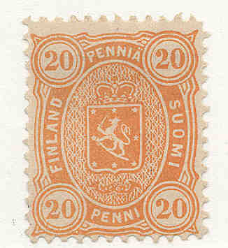
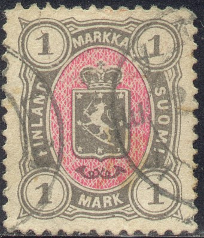
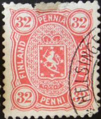
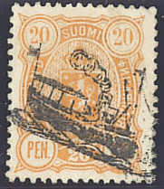
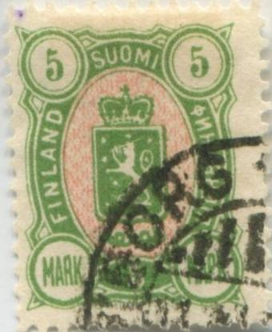
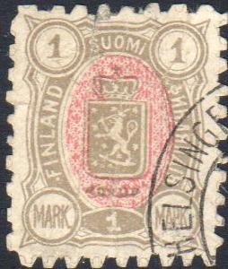

Return To Catalogue - Finland 1856 issue - 1860-1874 issues - 1891-1916 issues - 1917 onwards - Aunus - Carelia - Local issues for Helsingfors and Tammerfors - Miscellaneous
Note: on my website many of the
pictures can not be seen! They are of course present in the
catalogue;
contact me if you want to purchase the catalogue.
For issues of Finland before 1874 click here.
2 p grey 5 p orange 5 p green (1885) 8 p green 10 p brown (1879) 10 p red (1885) 20 p blue 20 p orange (1885) 25 p red (1879) 25 p blue (1885) 32 p orange 1 M violet 1 M grey and red 5 M green and red 10 M brown and red
The first stamp to be issued was the 32 p with perforation 14. Afterwards, many of these stamps were issued with different perforations: 11, 11 x 12 1/2 or 12 1/2.
Value of the stamps |
|||
vc = very common c = common * = not so common ** = uncommon |
*** = very uncommon R = rare RR = very rare RRR = extremely rare |
||
| Value | Unused | Used | Remarks |
| 2 p | * | * | |
| 5 p orange | * | c | |
| 5 p green | * | c | |
| 8 p | *** | *** | Genuine stamp has perforation 11 Reprint (perforation 12 1/2): * |
| 10 p brown | *** | * | |
| 10 p red | * | c | |
| 20 p blue | ** | vc | |
| 20 p orange | * | vc | |
| 25 p red | ** | c | |
| 25 p blue | ** | c | |
| 32 p | *** | ** | Perforated 14: R |
| 1 M violet | *** | ** | |
| 1 M grey and red | *** | ** | |
| 5 M | RR | RR | |
| 10 M | RR | RR | |
I have seen postal stationery in this design in the values: 10 p red, 10 p violet, 10 p orange-brown, 16 p brown, 20 p orange and 25 p red.


Cuts from postal stationary.
A block of four imperforate 1 M violet stamps was issued for the NORDIA 1975 exhibition (with text written on the back). Also, a stamp was issued with an image of a 32 p stamp for this occasion.
Mute cancel or cork-cancel
'ANK' in a rectangle cancel with numbers at the right hand side
(date?). I've seen this cancel in several sizes, mostly in black,
but also in violet color.
I've also seen pencancels on this issue.
The following 5 M and 10 M forgeries, have the inscription 'MARKKA' instead of 'MARKKAA':


According to the Serrane guide these forgeries were made by I. (Imperato?) in Genoa (Italy). Imperato
also made a forgery of the 1 M value as well as tete-beche
forgeries of the 5 and 20 penni values. The cancel used on these
forgeries appears to be 'JAKOBSTAD PIETARSAARI 3 VIII 85' (also
with Russian inscription of the town Jakobstad). Note that the
corner ornaments are too big.

Another forgery with inscription 'MARKKA' different from the
above one; could this be a candy wrapper? The perforation is very
defective and apparently printed and then cut out. I've also seen
the 20 p blue, 25 p red, 32 p red (see image above) of this issue
and the 1 M and 10 M of the next issue. They all have the corner
'HELSINGF' cancel. The lettering is also different from the
genuine stamps.
The next forgery of the 5 M is imperforate and has the word 'FALSCH' (=forged in German) written on top:


Imperforate forgeries with "FALSCH" overprint, one of Senf's products. Also a 'cancelled' one
perforated and the "FALSCH" text made more or less
invisible. .

Another primitive forgery of the 32 p value

A modern forgery often (always?) with 'Facsimile' printed on the
backside. Note the very badly done 'squarish' perforation.


I've been told that these stamp are reprints made in 1892. The
genuine 8 p stamp has perforation 11, the reprint has perforation
12 1/2.

32 p in red and blue and 1 M lilac (non-issued desings)
Labels in a similar design. I've seen the red label with an
overprint 'We Are Agents For Roessler's Stamp News 50 c Per
Year.'.
2 p grey 5 p green 10 p red 20 p orange 25 p blue 1 M grey and red 5 M green and red 10 M brown and red
All these stamps were issued with perforation 12 1/2. Furthermore the values 5 p, 10 p, 20 p and 25 p exist with perforation 14 x 13.
Value of the stamps |
|||
vc = very common c = common * = not so common ** = uncommon |
*** = very uncommon R = rare RR = very rare RRR = extremely rare |
||
| Value | Unused | Used | Remarks |
| 2 p | c | c | |
| 5 p | c | vc | |
| 10 p | c | vc | |
| 20 p | c | vc | Exists with red gum |
| 25 p | c | vc | |
| 1 M | c | c | |
| 5 M | ** | ** | |
| 10 M | *** | *** | |
I have seen postal stationery in the value 10 p in this design.
Cork cancels, various types.

I've also seen pencancels on this issue.
The values 5 M and 10 M were forged by Fournier, they can be recognized by their cancels:
(Fournier forgery of the 10 M value, with Kuopio cancel)
(Fournier forged cancels, reduced sizes)
"Blue" prints of Fournier forgeries, as they can be
found in the Fournier Album (these blue prints were created for
the Fournier Album when the forgeries were no longer in stock).
Tampere As Tammerfors R (+Russian town name) 8 V 98 4 1
Wiborg Wiipuri 11 XI 97 9b
Wiborg 6 XI 89
Kuopio (+Russian town name) 1 IV 98 3 1
Helsingfors Helsinki (+Russian town name) 5 III 00
These forgeries were offered in Fournier's pricelist of 1914 for
2 Swiss Francs both (as first choice forgeries).
I've been told that the next stamp is a Fournier forgery, though the cancel does not resemble any of the above. Also note the absence of the background pattern:

(Fournier forgeries?)

Another forgery of the 5 M, note the different '5's and the too
short word 'FINLAND'. Next to it two cancelled forgeries made by
the same forger (also a 10 M forgery).

A forgery of the 10 M with the bottom '1' different from a
genuine stamp. Also a forgery of the 1 M value, with very bad
perforation. Both have the corner 'HELSINGF' cancel, from which
they can easily be identified (are these the so-called
'candywrapper-forgeries'?).
A Fazer 'candy wrapper' exists of the 5 M with printed perforations and a very distinct cancel (sorry, no images available yet).
More on forgeries of the 5 M and 10 M stamps can be found in 'The Posthorn' (1980) page 96-99.
For issues of 1891 to 1920 click here.


{kind=link}
{kind=link}
{kind=link}
{kind=link}
{kind=link}
{kind=link}